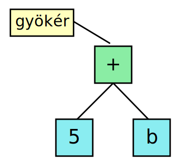

A számológép kiegészítése változókkal
Nagy Gergely · 2015.02.18 · Frissítve: 2015.02.15
A szintaxisfás írás folytatása. Ebben egy olyan számológép szerepel, amelyben változókat és értékadást is lehet használni.
A szintaxisfa építésről szóló írásunkban példaként egy egyszerű számológépet írtunk, amivel a négy alapműveletből és tetszőleges mélységű zárójelekből álló kifejezést tudtunk kiszámolni.
Most kiegészítjük a számológépet úgy, hogy képesek legyünk változókat definiálni és tetszőleges részkifejezések értékét el tudjuk bennük menteni. Mindezt továbbra is oly módon, hogy egy szintaxisfát építünk és azt értékeljük ki.
Például az a = 5 + (b = 6) kifejezésből az ábrán látható fát
fogjuk elkészíteni.
1A változók tárolása
Először is azt kell kitalálnunk, hogy hogyan tároljuk el a változóinkat. Egy változóról két dolgot kell nyilvántartanunk, a nevét és az aktuális értékét, tehát adódik a következő struktúra:
typedef struct valtozo {
char nev[51];
double ertek;
struct valtozo *kovetkezo;
} valtozo;
A változóneveket az egyszerűség kedvéért 50 karakterben korlátoztuk. Látható, hogy egy egyszeresen láncolt listában szeretnénk a változóinkat nyilvántartani. Mivel egy néven csak egy darab változó létezhet, ezért listakezelő függvényeinket úgy kell kialakítanunk, hogy valójában egy halmazt valósítsunk meg.
Ennek a részleteibe most nem megyünk bele (a kód része a letölthető programnak, a halmaz megvalósítása mindössze 50 sor). Minket most csak az érdekel, hogy hogyan fogjuk tudni kezelni ezt az adatszerkezetet.
Egy függvény segítségével tudjuk majd kezelni a változókat. A
lekerdez() visszaadja az adott nevű változó értékmezőjének a
címét. Így, ha csak a változó értékére vagyunk kíváncsiak, akkor egyszerűen
kiolvassuk az adott címen lévő értéket, de ha szeretnénk, felül is tudjuk írni.
double *lekerdez(valtozo **valtozok, char const *nev);
A függvény úgy működik, hogy ha egy változó nem szerepel még a halmazban, akkor berakja őt és nullára inicializálja. Ezért van szükség kettős indirekcióra a halmaz átadásakor, hiszen megváltozhat az adatszerkezet a lekérdezés következtében.
Ezzel a megoldással a "definiálatlan" változók értéke is lekérdezhető és 0-t ad. Természetesen, ha elírjuk egy változó nevét, akkor így nem kapunk figyelmeztetést, hiszen ekkor egy új változót hozunk létre.
2A változók lekérdezése
A következő feladatunk az értelmező átalakítása. Először illesszük be a nyelvtanunkba a változók lekérdezésének a lehetőségét!
kifejezés ::= összeg
összeg ::= szorzat (('+' | '-') szorzat)*
szorzat ::= tényező (('*' | '/') tényező)*
tényező ::= szám | változónév | zárójeles
zárójeles ::= '(' kifejezés ')'
Ehhez mindössze annyit kell tenni, hogy megengedjük, hogy egy tényező ne csak szám vagy zárójeles kifejezés lehessen, hanem változónév is. Szükség lesz természetesen egy változónév szabályra, amely olyan stringekre fog illeszkedni, amelyek betűvel kezdődnek és betűvel vagy számmal folytatódnak.
static int valtozonev(char **szoveg, char *nev) {
char *munka = *szoveg;
int hossz = 0;
szokoz(&munka);
if (isalpha(munka[hossz++])) {
while (isalnum(munka[hossz]) && hossz < 50) hossz++;
if (hossz == 50 && isalnum(munka[hossz])) return 0; /* túl hosszú név nem lehet változó */
else {
int i;
for (i = 0; i < hossz; ++i) nev[i] = munka[i];
nev[i] = 0;
*szoveg = munka + hossz;
return 1;
}
}
else return 0;
}
A függvényünk megpróbál illeszkedni egy változónévre, és ha ez sikerült, akkor a paraméterként kapott stringbe beleírja a változó nevét. Arra is ügyel, hogy a változónév ne legyen hosszabb a megengedettnél.
Most már értjük, hogy miért vonatkozik a fenti szabály C-ben is változónevekre: ha kezdődhetnének számmal, akkor az értelmező egy számjegyet látva nem tudná eldönteni, hogy az ott egy szám lesz vagy egy változónév.
A következő megoldandó feladat az, hogy a fában is tudjunk reprezentálni egy
változólekérdezést. Ehhez egy új szimbólumtípust kell bevezetnünk – ez
lesz a VALTOZO. A szimbólumunk adat mezőjében pedig
megjelenik egy új elem: a név.
typedef enum {MUVELET, SZAM, VALTOZO} szimbolum_tipus;
typedef struct szimbolum {
szimbolum_tipus tipus;
union {
double szam;
char muveleti_jel;
char nev[51];
} adat;
struct szimbolum *op1, *op2;
} szimbolum;

Az 5+b kifejezés tehát az ábrán látható alakot fogja ölteni. Már csak annyi dolgunk van, hogy
megoldjuk, hogy a fát kiértékelő függvény képes legyen lekérdezni a hivatkozott változó értékét a változókat
tároló halmaztól.
Ehhez ki kell egészítenünk a típus szerint elágazó switch-et a VALTOZO típus
lekezelésével és természetesen a kiértékelő függvénynek át kell adnunk a halmaz címét:
double ast_kiertekel(szimbolum *ast, valtozo **valtozok) {
if (ast == NULL) return 0.0;
else {
double op1 = ast_kiertekel(ast->op1, valtozok), op2 = ast_kiertekel(ast->op2, valtozok);
switch (ast->tipus) {
case SZAM:
return ast->adat.szam;
case VALTOZO:
return *lekerdez(valtozok, ast->adat.nev);
case MUVELET:
switch (ast->adat.muveleti_jel) {
case '+':
return op1 + op2;
case '-':
return op1 - op2;
case '*':
return op1 * op2;
case '/':
return op1 / op2;
}
}
return 0.0; //default ágak hiánya miatt
}
}
Most változókat létrehozni és nekik értéket adni még nem tudunk, de lekérdezni őket már igen.
Valójában már ez is egy hasznos dolog: ilyen módon segíthetjük a számolást konstansok biztosításával.
Az alábbi kódrészlet mutatja az új main()-t. Látható, hogy valtozok
néven létrehozunk egy üres halmazt, majd létrehozunk benne két változót "PI" illetve "E" néven.
Ezeket már most fel tudjuk használni a számításaink során.
int main(void) {
char szoveg[255] = {0};
szimbolum *ast = NULL;
valtozo *valtozok = NULL;
int folytatjuk = 1, i;
*lekerdez(&valtozok, "PI") = 3.14159265359;
*lekerdez(&valtozok, "E") = 2.71828182846;
do {
printf("? ");
fgets(szoveg, 254, stdin);
if (strstr(szoveg, "kilep") == szoveg) folytatjuk = 0;
else if (kiertekel(szoveg, &ast)) {
printf("Az kifejezés értéke: %g.\n", ast_kiertekel(ast, &valtozok));
}
else {
printf("Nem sikerült értelmezni a kifejezést.\n");
}
ast_torol(ast);
ast = NULL;
} while (folytatjuk);
return 0;
}
3Értékadás változóknak
Az értékadás egy új szabályként fog megjelenni a nyelvtanunkban:
értékadó_kifejezés ::= ( változónév '=' )? összeg
Az értékadás rész (a változónév és az értékadó operátor) opcionális, vagyis egy csak számokból álló kifejezés is megfelel a nyelvtanunknak a továbbiakban is.
Annak érdekében, hogy a kifejezésünkben bárhol szerepelhessen értékadás, be kell ezt a szabályt a rekurzív körbe. Ezt úgy tesszük meg, hogy egy zárójeles kifejezés ezentúl egy értékadás lesz zárójelek között:
értékadó_kifejezés ::= ( változónév '=' )? összeg
összeg ::= szorzat (('+' | '-') szorzat)*
szorzat ::= tényező (('*' | '/') tényező)*
tényező ::= szám | változónév | zárójeles
zárójeles ::= '(' értékadó_kifejezés ')'
A fenti nyelvtan így már megengedi az ilyen kifejezéseket: a = 5 + (b =
6). Az értékadó operátor láncolását (a = b = c = 6) így nem
tudjuk megoldani, de egy kerülő úton ez is lehetséges: a = (b = (c =
6)). Ennek a kiküszöbölésével most nem foglalkozunk (bár nem bonyolult).
A következő feladatunk az, hogy a fában is képesek legyünk reprezentálni az értékadást. Ha meggondoljuk ez azt jelenti, hogy el kell tárolnunk a változó nevét és egy kifejezést, amit ki kell számolni és az értékét hozzá kell rendelni a változóhoz.
Ezen túl természetesen meg kell még valósítani az értékadó operátor fő hatását is, tehát az
értékadó kifejezésnek fel kell venni a másolt értéket – különben a 5 + (b = 6)
alakú kifejezések nem lennének működőképesek.
A szimbólumok szintjén ez azt jelenti, hogy lesz egy új típusunk, az
ÉRTÉKADÁS. Azért kell őt bevezetnünk, mert a VÁLTOZÓ
hatására kilvastuk a változó aktuális értékét és nem írtuk őt egy másik
kifejezés értékével, tehát nem tehetjük meg, hogy egy olyan értékadó
szimbólumunk legyen, aminek a bal operandusa egy VÁLTOZÓ,
a jobb oldali pedig egy kifejezés, mert így két konstans számot kapna
az operátorunk és ezzel nem tudna mit kezdeni.
typedef enum {MUVELET, SZAM, VALTOZO, ERTEKADAS} szimbolum_tipus;
struct szimbolum;
typedef struct ertekadas {
char nev[51];
struct szimbolum *kifejezes;
} ertekadas;
typedef struct szimbolum {
szimbolum_tipus tipus;
union {
double szam;
char muveleti_jel;
char nev[51];
ertekadas egy_ertekadas;
} adat;
struct szimbolum *op1, *op2;
} szimbolum;
Az az érdekes helyzet állt elő, hogy kölcsönös hivatkozásunk van: a szimbolum struktúrának kell,
hogy legyen egy ertekadas mezője, mert egy szimbólum lehet értékadás. Ugyanakkor az ertekadas
struktúrának is lesz egy szimbolum mezője, hiszen az értékadáshoz el kell tárolnunk egy kifejezést.
Az ilyen jellegű problémák gyakran előfordulnak a programozás során és elődeklarációval oldhatjuk meg őket. A
struct szimbolum;
sor azt mondja, hogy lesz egy szimbolum nevű struktúránk, amit majd később definiálunk. Ez ahhoz elég, hogy
a fordító ilyen struktúrára mutató pointereket értelmezni tudjunk. Természetesen, ha megpróbálnánk nem mutató jellegű
adattagot létrehozni belőle, akkor azt már nem hagyná, hiszen ahhoz a pontos méretét is ismernie kell, amit ez alapján
a deklaráció alapján még nyilván nem ismerhet.
Tulajdonképpen két függvényt kell meg-, illetve átírnunk: létre kell hoznunk az új ertekado_kifejezes()-t,
amivel a nyelvünkbe illesztjük az értékadásokat és módosítanunk kell az ast_kiertekel()-t, hogy képes
legyen az előírt értékadás elvégzésére.
Nézzük meg először az új szabályunkat:
static int ertekado_kifejezes(char **szoveg, szimbolum **ast) {
char *munka = *szoveg;
char nev[51], kar;
int van_ertekadas = 0;
szimbolum *kifejezes;
if (valtozonev(&munka, nev) && karakter(&munka, "=", &kar)) {
van_ertekadas = 1;
}
/* Ha nem volt értékadás, vagy nem volt teljes (!), akkor vissza kell állítani a munka pointert: */
else munka = *szoveg;
if (osszeg(&munka, &kifejezes)) {
if (van_ertekadas) {
*ast = uj_ertekadas(nev, kifejezes);
}
else {
*ast = kifejezes;
}
*szoveg = munka;
return 1;
}
else {
return 0;
}
}
Egy logikai változóban (van_ertekadas) jegyezzük fel, hogy történt-e értékadás, ugyanis ez opcionális.
Ez azért fontos, mert máshogyan építjük a fát, ha van és ha nincs.
Ha nincs, akkor egyszerűen az összeg szabály által szolgáltatott fát adjuk tovább (ilyenkor olyan, mintha
itt sem lenne ez a szabály). Ha van értékadás, akkor viszont egy új értékadás szimbólumot hozunk létre, ami eltárolja
a változó nevét és az összeg által visszaadott kifejezésfát.
A fügvényben lévő első if-nél van egy apróság, aminek azonban nagyon fontos a szerepe. Elsőre azt gondolhatnánk,
hogy egy hibát követünk itt el, ugyanis egy ÉS-kapcsolat szerepel a feltételben, így előfordulhat, hogy a változónévre
volt illeszkedés, az értékadó operátorra viszont nem. Akár van változónév, akár nincs, sikertelenség esetén mi mindenképpen
visszaállítjuk a szöveg-mutatót előre és onnan próbálunk összeget illeszteni.
Ez a megoldás azért helyes, mert az összeg lehet egy változónév, hiszen egy összeg leegyszerűsödhet egy szorzattá, ami egy tényezővé, ami
pedig lehet egyetlen egy darab változónév. Ezért nem szabad logikai HAMIS értékkel visszatérnünk, ha egy változónevet találunk értékadó operátor
nélkül egy értékadó_kifejezés szabály elején.
Vágezetül csak a kiértékelő függvény maradt. Itt nagyon egyszerű a teendőnk: ki kell értékelni az értékadó szimbólumban eltárolt kifejezést és a kapott eredménnyel két feladatunk van: meg kell valósítanunk az értékadó operátor fő- és mellékhatását, vagyis el kell tárolnunk az értéket a változóban és vissza is kell adnunk, mint az egész kifejezés értékét:
double ast_kiertekel(szimbolum *ast, valtozo **valtozok) {
if (ast == NULL) return 0.0;
else {
double op1 = ast_kiertekel(ast->op1, valtozok), op2 = ast_kiertekel(ast->op2, valtozok);
switch (ast->tipus) {
case SZAM:
return ast->adat.szam;
case VALTOZO:
return *lekerdez(valtozok, ast->adat.nev);
case MUVELET:
switch (ast->adat.muveleti_jel) {
case '+':
return op1 + op2;
case '-':
return op1 - op2;
case '*':
return op1 * op2;
case '/':
return op1 / op2;
}
case ERTEKADAS:
op1 = ast_kiertekel(ast->adat.egy_ertekadas.kifejezes, valtozok);
*lekerdez(valtozok, ast->adat.egy_ertekadas.nev) = op1;
return op1;
}
return 0.0; //default ágak hiánya miatt
}
}
A teljes kód letölthető innen.